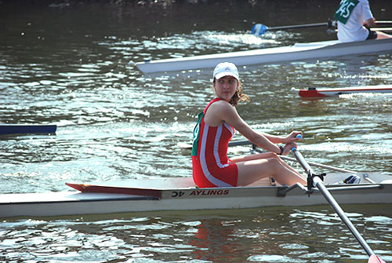
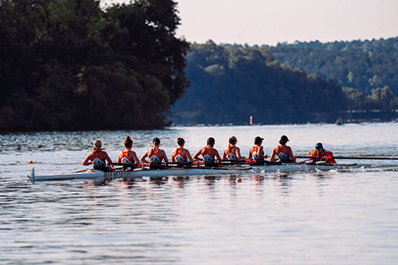
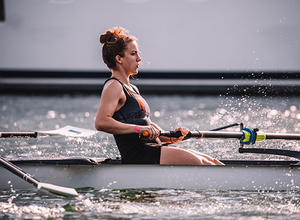

I started to row at the age of ten, this is my first race in Amiens, France. Little did I know what lay ahead! From the French National team to studying abroad.

Earning a full ride to row for the University of Miami. I discovered a completely different way to approach the sport and how to adapt to this American culture. (Photo by: Miami Hurricanes Rowing)

After four years, countless hours of practice and little sleep I finally realize how much this team taught me. We pour our blood, sweat, and tears into this dream of becoming the best physically and technically. (Photo by: Miami Hurricanes Rowing)